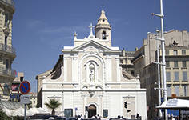

LE VIEUX-PORT
Le Vieux-Port de Marseille
Depuis 26 siècles, le Vieux-Port est le théâtre prestigieux où se joue l’histoire de Marseille. Durant l’Antiquité et le Moyen Age, la ville grecque (Massalia), puis romaine (Massilia) et médiévale (Masiho) s’est développée sur la rive Nord puis vers le Sud au XVIIe siècle. Dès lors, l’entrée du port allait être gardée par deux forts, le fort Saint-Nicolas et le fort Saint-Jean. Une des silhouettes symboles du Vieux-Port a notamment été le pont transbordeur, ouvrage métallique inauguré en 1905 entre les deux forts, mais malheureusement détruit après la guerre. En 2013, le Vieux-Port a été rénové (accès au port plus facile, circulation réduite, création d’une ombrière par Norman Foster)et reste aujourd’hui le cœur névralgique de Marseille sous le regard bienveillant de Notre-Dame-de-la-Garde.
Direction les calanques de Marseille !
C’est aussi sur le Vieux-Port que sont installées les compagnies maritimes proposant des excursions pour admirer les calanques de Marseille. Des visites commentées au cœur des calanques et des îles entre la cité phocéenne et Cassis (archipel du Frioul, de Riou…), une balade incontournable qui offre un panorama exceptionnel sur les falaises plongeant dans l’eau turquoise. Par ailleurs, d’avril à octobre, des navettes maritimes de la RTM relient le Vieux-Port à la Pointe Rouge et à l’Estaque.
L’église Saint-Ferréol
Plus discrète que Notre-Dame de la Garde, l’église Saint-Ferréol est un vestige du XVIe siècle bordant le Vieux-Port de Marseille. A l’emplacement de l’église actuelle s’élevait, au XIIe siècle, la commanderie des Templiers. Après la suppression de l’Ordre du Temple et la dispersion de ses membres, les religieux augustins ont acheté les bâtiments en 1369. Ils entreprennent la construction de l’église gothique, consacrée en 1542, mais achevée en 1588. Le clocher, très italien, date du XVIIIe siècle. Elle est érigée en paroisse en 1803 sous le vocable de Saint-Ferréol en souvenir de la collégiale du même nom détruite en 1794 (à la place de l’actuelle préfecture). A l’origine, l’édifice comportait 5 travées et 12 chapelles latérales, mais des travaux d’urbanisme ont détruit deux travées en 1804. Après le percement de la rue Impériale (actuelle rue de la République), le cimentier Désiré Michel réalise la nouvelle façade néobaroque
